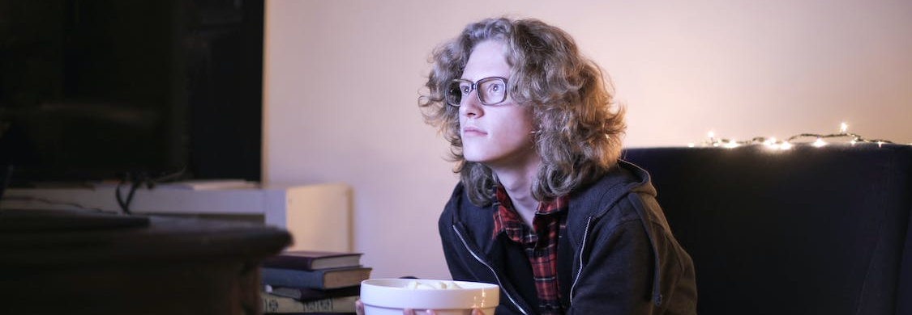

Oleh - Farras Naufal
NIM - 11210251000011



sumber:pexels.com
Selama beberapa tahun terakhir, dunia hiburan televisi telah menyuguhkan sejumlah series yang begitu mengagumkan. Dari drama mendalam hingga fantasi epik, serial TV modern menawarkan beragam cerita yang tak hanya menghibur, tetapi juga memukau penonton dengan plot yang rumit dan karakter yang mendalam. Apakah kamu tengah mencari rekomendasi series terbaru untuk ditonton? Penulis telah merangkum tujuh series pilihan yang patut masuk dalam daftar tontonan wajibmu.
Tanpa perlu menunggu lebih lama, mari kita simak rekomendasi series ini yang memiliki segalanya: dari cerita yang menarik hingga produksi yang luar biasa. Setiap series memiliki daya tarik uniknya sendiri, siap memikatmu ke dalam dunia yang penuh petualangan dan emosi. Berikut adalah tujuh rekomendasi series yang tak boleh kamu lewatkan. Siapkan cemilan favoritmu dan nikmati petualangan seru!

Sumber: AMC Network - Trailer
Breaking Bad adalah salah satu serial televisi paling ikonik yang pernah ada. Ceritanya mengisahkan transformasi drastis seorang guru kimia bernama Walter White, yang beralih menjadi produsen dan pengedar metamfetamin demi mencukupi kebutuhan keluarganya setelah didiagnosis menderita kanker.

Sumber: Netflix - Trailer
Black Mirror adalah sebuah karya seni televisi yang luar biasa dan menghadirkan pandangan yang mendalam terkait dampak teknologi pada masyarakat modern. Setiap episodenya mengambil pendekatan yang berbeda, membawa penonton ke dalam cerita-cerita independen yang menyajikan dunia yang futuristik namun sering kali menakutkan. Serial ini mengungkapkan sisi gelap dan kompleks dari teknologi, mempertanyakan moralitas dan etika di era digital.

Sumber: Disney - Trailer
The Mandalorianadalah keajaiban ruang angkasa yang membawa kembali esensi epik dan petualangan ke dalam alam serial TV. Cerita ini mengikuti perjalanan seorang prajurit mandalorian, Din Djarin, yang juga dikenal sebagai Mando, di galaksi Star Wars. Serial ini sukses membawa nuansa klasik Star Wars sambil memperkenalkan elemen baru dan memfokuskan pada karakter dan alur cerita yang kuat.

Sumber: ABC Network - Trailer
Modern Family adalah persembahan cemerlang dalam genre komedi situasi yang memukau penonton dengan humor segar dan karakter-karakter yang mencuri perhatian. Serial ini mengisahkan kehidupan tiga keluarga yang saling terkait melalui hubungan perkawinan. Dengan gaya mockumentary, penonton diajak untuk melihat kehidupan sehari-hari yang kacau-balau, lucu, dan penuh cinta dari anggota keluarga yang beragam.

Sumber: Netflix - Trailer
Stranger Things adalah perpaduan sempurna antara nostalgia, misteri, dan keajaiban di era 1980-an yang membawa penonton dalam petualangan yang tak terlupakan. Serial ini menggambarkan kisah kehilangan seorang anak di kota kecil Hawkins, serta kemunculan seorang gadis misterius dengan kekuatan supernatural. Cerita yang menggugah ini memadukan elemen fiksi ilmiah, latar belakang era retro, dan ketegangan yang memukau.
{kind=link}